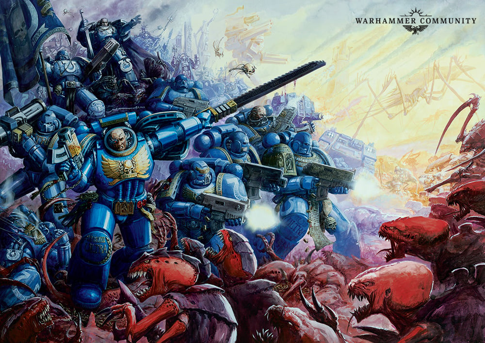

The Tyranids
A bio-horror species from beyond the galaxy's edge, arriving in colossal Hive Fleets that strip entire worlds of organic matter and leave bare rock behind.
Every Tyranid organism, from the smallest gaunt to the largest bio-ship, is a disposable expression of a single overriding intelligence known as the Hive Mind. Individual creatures show no independent will; they are grown for a purpose, deployed, and consumed for raw material once spent. Hive Fleets converge on worlds rich in biomass, strip them of every living thing, and move on, leaving lifeless rock where forests and cities once stood.
The First Tyrannic War, 745.M41

Hive Fleet Behemoth was the first Tyranid force the Imperium ever encountered, and it drove straight into Ultramar. It stripped the garden world of Prandium bare on its approach before turning on Macragge itself. The Ultramarines threw their entire veteran 1st Company into defending the planet's polar fortresses and the defence lasers they housed, an extraordinary commitment of their most experienced warriors. Chapter Master Marneus Calgar directed the fleet in orbit and struck at the heart of the hive fleet while the fortresses held the line below.
At Cold Steel Ridge, Calgar fought the Swarmlord, the Hive Mind's synapse commander, in single combat and was grievously wounded in the exchange. When reinforcements finally reached the 1st Company's position, they found the veterans wiped out to the last man, surrounded by dead Tyranids. The battle is still told as one of the Chapter's defining acts of sacrifice. Behemoth was ultimately broken and scattered, but the war left Macragge scarred and the Chapter's veteran company gone.
Further Hive Fleets have followed, among them Leviathan, which has pressed the defence of the Bastior Sub-sector near Ultramar in more recent campaigns. No two Hive Fleets behave identically, but the threat they pose is always the same: total consumption of a world's biosphere.
Genestealers
Infiltrator organisms that can arrive generations ahead of a Hive Fleet, spreading through a population and corrupting it from within before the main invasion even appears in-system.
Termagants & Hormagaunts
Disposable swarm troops, produced in overwhelming numbers to wear down defenders through sheer weight of bodies.
Tyranid Warriors
Larger synapse creatures that relay the Hive Mind's will to nearby swarms, keeping lesser organisms coordinated in battle.
Carnifexes
Heavily armoured bio-titans bred for close-quarters demolition, targeting fortifications as much as defenders.
Hive Tyrants
Towering synapse commanders that direct entire engagements; the Swarmlord is the most infamous named example.